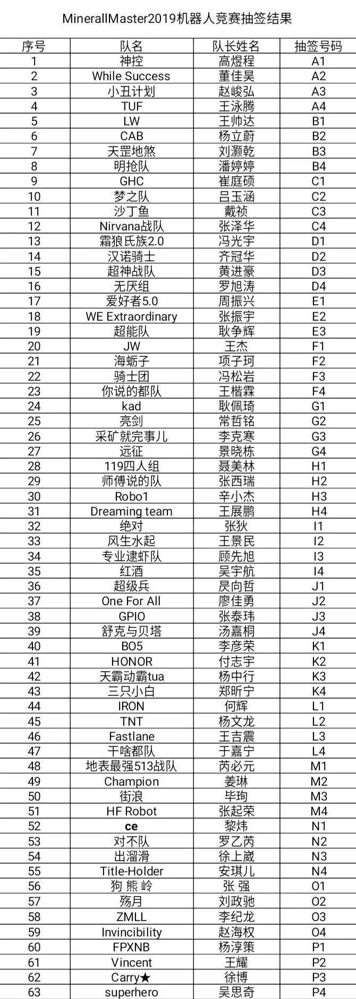
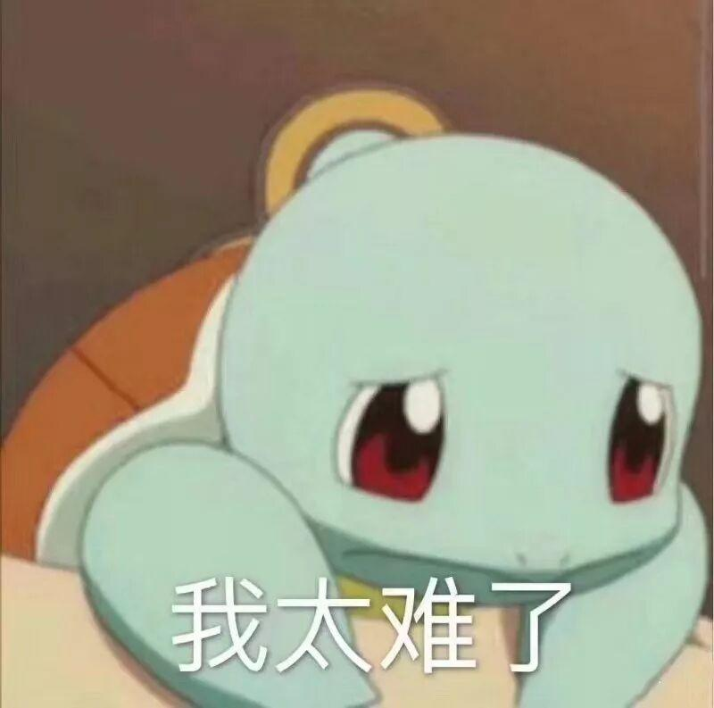

理工杯还有三天到达战场！请做好准备...........

距离比赛还有三天！！
大家可千万不要松懈！！
新鲜出炉的小组赛分组名单

第五届理工杯的报名已经结束，感谢各位同学的踊跃报名和大力支持。本次理工杯共有63支队伍参加，经过了11月25日的抽签，小组赛分组的名单已经确定下来。

小组赛分组名单


不怕你不会 就怕你不问！

可能大部分参赛选手在机器人的制作过程中都会像下面这只杰尼龟一样↓

不过大家放心！！为了不让你秃头，为了让你快乐备战，为了你能够在比赛有出色的发挥。大家可以在比赛的通知群询问学长和同学们，学长和同学们也会耐心的帮助你解决问题!
“如果说理工杯是一座难以翻越的大山，
那么我就，铲也要把它铲平越过去！”
快夸小编帅！！给你们送铲子哟~

熟悉比赛规则

敲黑板！！这条很重要的！！拿小本本记下来！
1.如果你不熟读比赛规则，你就算出来做出来一个变形金刚...也没用。请大家务必认认真真的阅读比赛规则（比赛规则已经在比赛通知群发布）
2.一定牢记试场时间，比赛时间。每个队伍有十分钟试场的时间。大家可以通过这十分钟试场来熟悉场地，完善作战计划，发现自己的不足！！
具体的试场时间与比赛时间，我们将会在比赛通知QQ群发布。
最后祝大家能够出色发挥，取得一个好成绩！！
编辑：孙恩汇


长按识别二维码关注沈理电协
获取更多比赛信息！！！